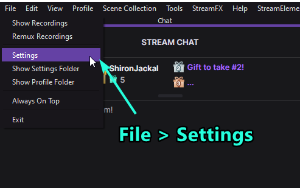
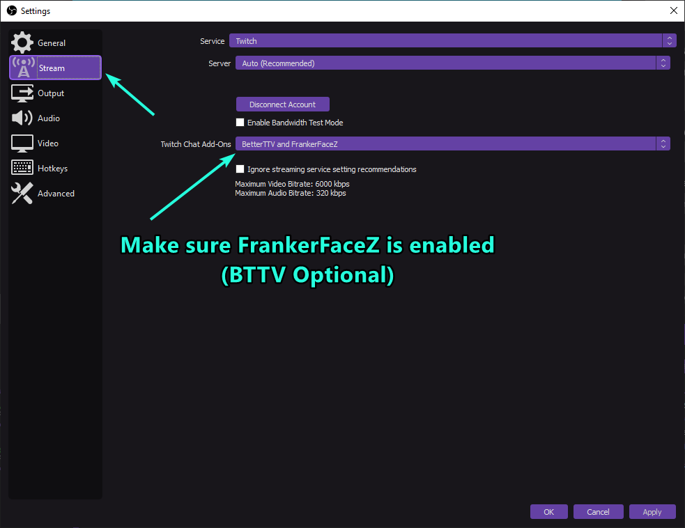
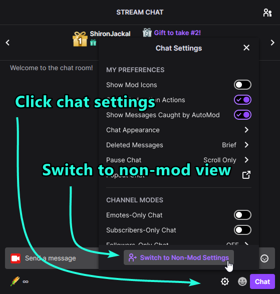
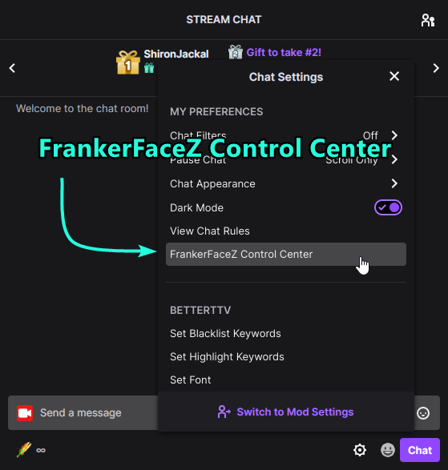
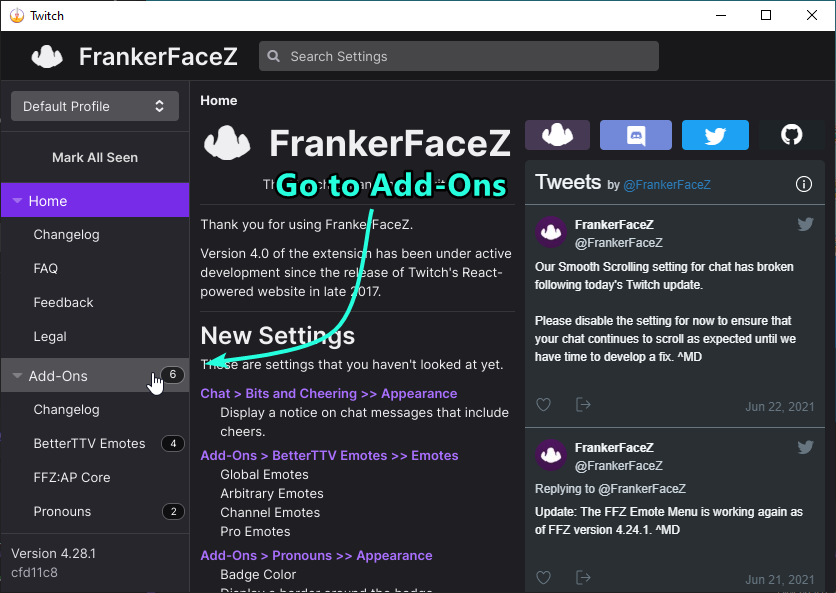
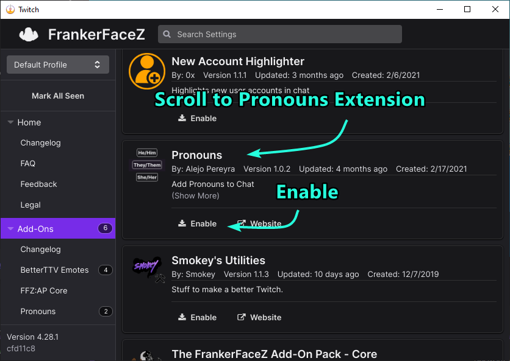

Enabling Pronouns Extension in OBS Chat Dock
In OBS, go to File > Settings
Ensure FrankerFaceZ is enabled on the Stream tab
Back on the main OBS window, click the settings button on the chat dock and click "Switch to Non-Mod Settings"
Click FrankerFaceZ Control Center
Go to Add-Ons on the Sidebar
Find Pronouns Extension on the left and click Enable
You will now see the pronouns of users in chat!